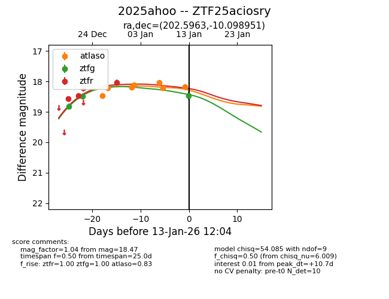
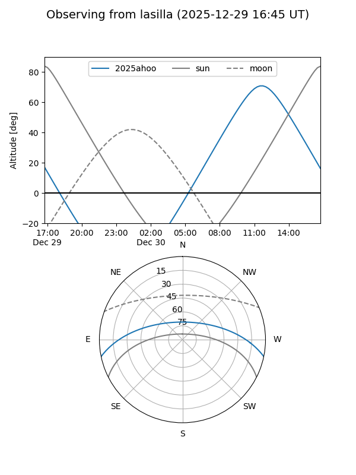
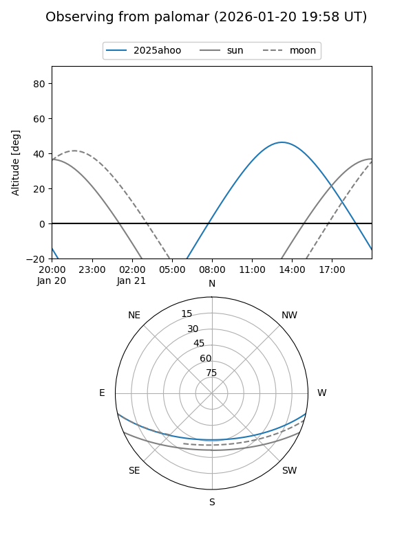

2025ahoo
Target 2025ahoo at 2025-12-31 18:00
Aliases and brokers:
FINK: link
Lasair: link
ALeRCE: link
TNS: link
YSE: link
alt names
ZTF25aciosry (ztf,fink_ztf)
2025ahoo (tns,yse)
Coordinates:
equatorial (ra, dec) = 202.5963,-10.09895
equatorial (HMS+DMS) = 13:30:23.11,-10:05:56.22
galactic (l, b) = (318.4782,+51.59333)
Flags:
Photometry:
last atlaso=18.24, ztfg=18.49, ztfr=18.03
2 atlaso, 2 ztfg, 4 ztfr detections
Lightcurve

Visibility


Additional plots